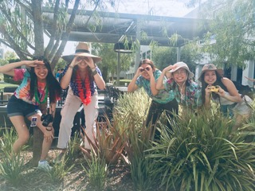

Trailblazers is a group of female coders, eager to help YOU have the best trip ever. We understand that with travelling to different spaces, researching the different climates, cultures, and landmarks can get confusing with all the various websites. So, we made it simple for you.
Planning a vacation can be stressful, especially on top of our busy lives. Our goal here at Trailblazers is to put all the information at your fingertips, whether it is popular tourist landmarks, hidden gems, restaurants, hotels, or even helpful tips about the local culture. We want to make it easy for you to travel because we believe one can learn so much through seeing the world. In the wise words of Mark Twain, "Travel is fatal to prejudice, bigotry, and narrow-mindedness, and many of our people need it sorely on these accounts. Broad, wholesome, charitable views of men and things cannot be acquired by vegetating in one little corner of the earth all one's lifetime." Our site has everything you need to know about the cities you want to travel to and more!
Welcome to Trailblazers, the site that wants to keep the stress of travelling to a minimum.

Amelie Ando:
Amelie is from Costa Mesa, but her parents are from Japan. She didn't have a lot of previous coding experience, but she had touched a little bit of Python. Her favorite part about the program is definitely the environment and the people, and the bond we have with each other. She personally loves drawing in her free time or going outside with friends.
Emily Pan:
Emily is from Cerritos. She had zero prior coding experience, and her favorite part about the GWC program is being able to build strong friendships with girls from different areas as well as learning the basics of coding. All of us in the program have become so comfortable and confident around each other, and she knows we’ll always be there for each other. In her free time, she likes playing her favorite songs on the piano and singing, as well as hanging out with friends or family.
Erin Kwon:
Erin moved to Irvine from South Korea when she was four years old. She had no previous coding experience, except a little bit with Scratch. She loves the sisterhood that formed between all of us and the friendships she’s made. She also now feels like she can really code, and has enjoyed the speakers who have opened her eyes to new occupations.
Julieta Campos:
Julieta moved to California from Mexico when she was three. She didn’t have any experience coding but had done a little bit with robotics. Her favorite part about the program is the bonds she’s made with all the girls. Even though we've all only known each other for about a month, she’s loved the close connections she’s built with the other girls. Everyone is very comfortable around each other and she knows she can count on us for anything. In her free time, she likes playing soccer, hanging out with friends, and browsing Zillow pretending she has any money to buy anything.
Sydney Ritchey:
Sydney is from San Diego. She had a little bit of prior coding experience, but was still nervous about coming to this camp. Her favorite parts of the GWC summer program have been getting exposed to a bunch of different jobs in the computer science field, as well as meeting and creating this incredible bond with the other girls in the program. In her free time, she likes to listen to music and read, as well as horseback ride.